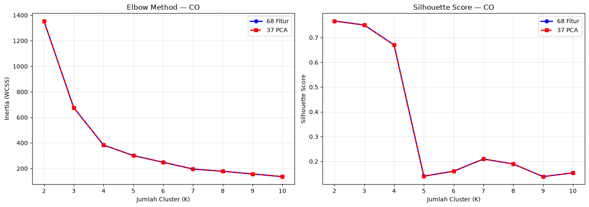
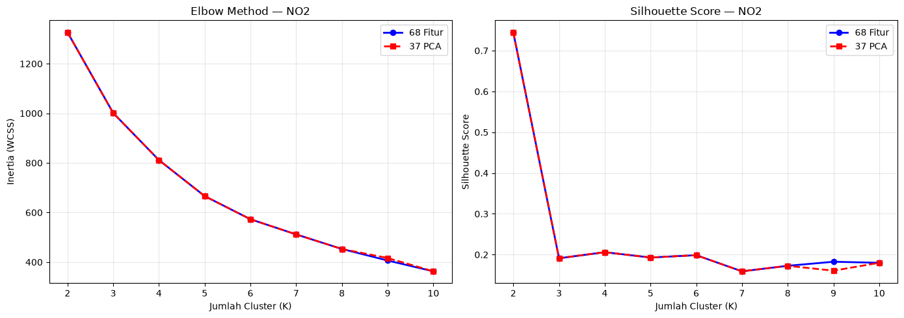
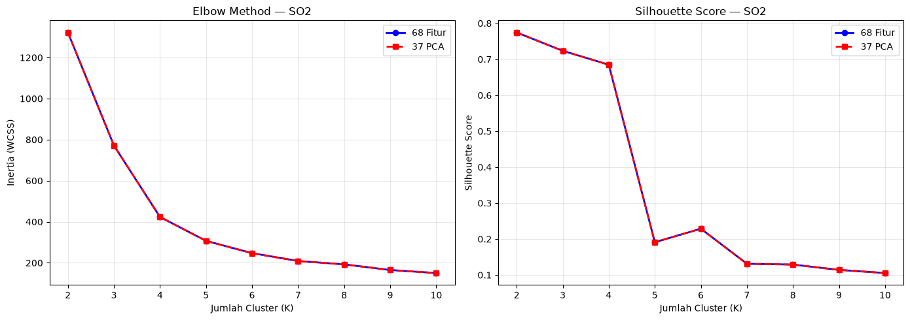
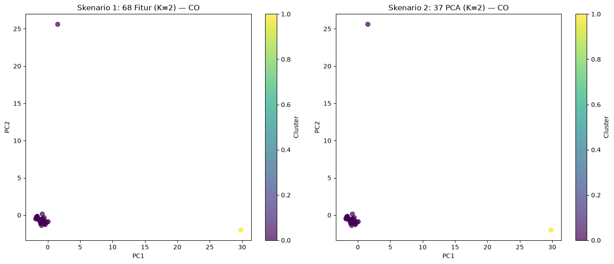
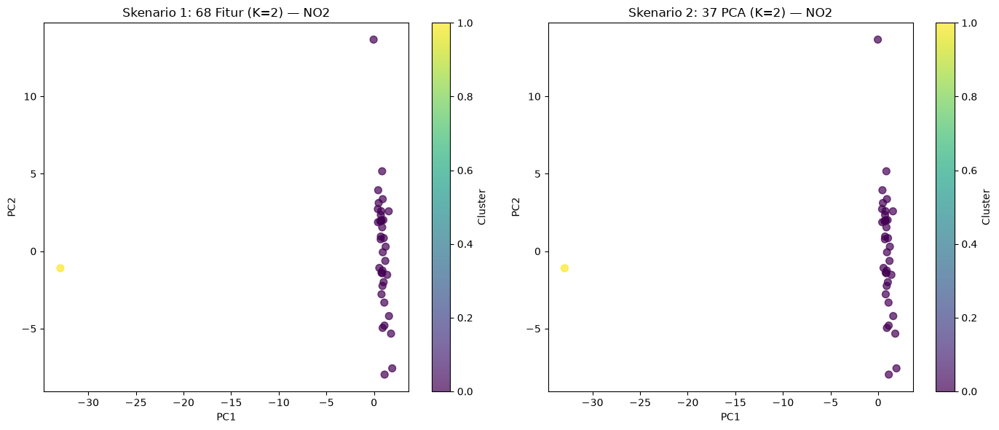
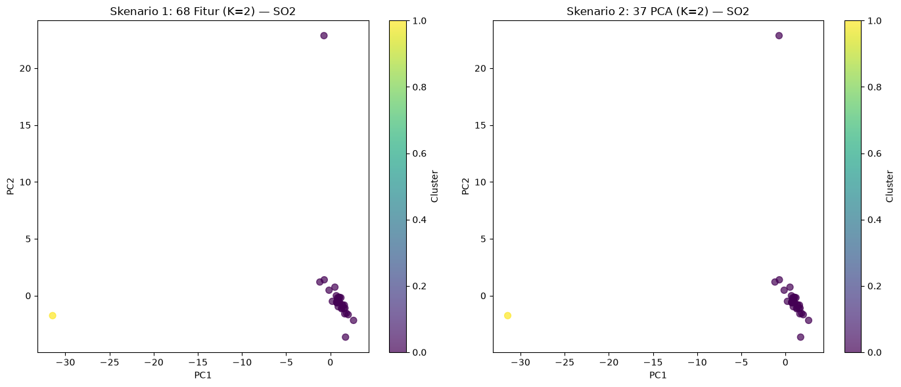

5.2 K-Means Clustering — Per Polutan#
Notebook ini menjalankan K-Means Clustering untuk masing-masing polutan (CO, NO₂, SO₂) pada dua skenario:
Skenario |
Input |
Keterangan |
|---|---|---|
Skenario 1 |
68 fitur asli |
Tanpa reduksi dimensi |
Skenario 2 |
37 fitur PCA |
Dengan reduksi dimensi |
Untuk masing-masing skenario, dicari jumlah cluster optimal (K) menggunakan Elbow Method dan Silhouette Score.
Dataset: Dataset gabungan kelas (35 mahasiswa × 68 fitur per polutan)
import pandas as pd
import numpy as np
import matplotlib.pyplot as plt
from sklearn.cluster import KMeans
from sklearn.metrics import silhouette_score
from sklearn.preprocessing import StandardScaler
from sklearn.decomposition import PCA
from sklearn.impute import SimpleImputer
import warnings
warnings.filterwarnings('ignore')
plt.rcParams['figure.dpi'] = 100
plt.rcParams['font.size'] = 10
POLLUTANTS = ['CO', 'NO2', 'SO2']
DATA_DIR = '../data/downloads/ekstraksi fitur'
META_COLS = ['id', 'nama', 'daerah']
K_range = range(2, 11)
5.2.1 Memuat Data#
Load dataset gabungan kelas untuk setiap polutan, lalu ekstraksi 68 fitur asli.
X_dict = {}
X_scaled_dict = {}
scaler_dict = {}
for p in POLLUTANTS:
path = f'{DATA_DIR}/ekstraksi_fitur_{p.lower()}.csv'
df = pd.read_csv(path)
X = df.drop(columns=META_COLS).values
# Handle NaN values with median imputation
nan_count = np.isnan(X).sum()
if nan_count > 0:
print(f'{p}: Ditemukan {nan_count} nilai NaN, melakukan imputasi median...')
imputer = SimpleImputer(strategy='median')
X = imputer.fit_transform(X)
scaler = StandardScaler()
X_scaled = scaler.fit_transform(X)
X_dict[p] = X
X_scaled_dict[p] = X_scaled
scaler_dict[p] = scaler
print(f'{p}: {X_scaled.shape[0]} data x {X_scaled.shape[1]} fitur')
CO: Ditemukan 24 nilai NaN, melakukan imputasi median...
CO: 35 data x 68 fitur
NO2: 37 data x 68 fitur
SO2: Ditemukan 24 nilai NaN, melakukan imputasi median...
SO2: 35 data x 68 fitur
# Load hasil PCA dari notebook 5.1
X_pca_dict = {}
n_samples = X_scaled_dict[POLLUTANTS[0]].shape[0]
target_n_components = min(37, n_samples) # Tidak bisa melebihi jumlah sampel
for p in POLLUTANTS:
loaded = False
# Coba load dengan berbagai kemungkinan nama file
for n_comp in [37, target_n_components, 35]:
try:
df_pca = pd.read_csv(f'{DATA_DIR}/pca_results/jabon_pca_{n_comp}fitur_{p.lower()}.csv')
X_pca = df_pca.drop(columns=META_COLS).values
X_pca_dict[p] = X_pca
print(f'{p} PCA: {X_pca.shape[0]} data x {X_pca.shape[1]} fitur')
loaded = True
break
except FileNotFoundError:
continue
if not loaded:
print(f'{p}: File PCA tidak ditemukan, melakukan PCA ulang...')
pca = PCA(n_components=target_n_components)
X_pca = pca.fit_transform(X_scaled_dict[p])
X_pca_dict[p] = X_pca
print(f'{p} PCA (ulang): {X_pca.shape[0]} data x {X_pca.shape[1]} fitur')
CO PCA: 35 data x 35 fitur
NO2 PCA: 37 data x 37 fitur
SO2 PCA: 35 data x 35 fitur
5.2.2 Menentukan K Optimal#
Elbow Method#
Mencari elbow pada kurva inertia (Within-Cluster Sum of Squares). Titik di mana penurunan inertia mulai melambat menandakan K optimal.
Silhouette Score#
Mengukur seberapa mirip sebuah titik dengan cluster-nya sendiri dibandingkan cluster lain. Skor mendekati 1 = cluster yang baik.
def find_optimal_k(X, label_prefix=''):
"""Jalankan K-Means untuk K=2..10, kembalikan inertia + silhouette."""
inertias = []
silhouettes = []
for k in K_range:
km = KMeans(n_clusters=k, random_state=42, n_init=10, max_iter=300)
labels = km.fit_predict(X)
inertias.append(km.inertia_)
sil = silhouette_score(X, labels)
silhouettes.append(sil)
print(f' {label_prefix} K={k}: inertia={km.inertia_:.2f}, silhouette={sil:.4f}')
best_k = list(K_range)[np.argmax(silhouettes)]
best_sil = max(silhouettes)
return inertias, silhouettes, best_k, best_sil
Skenario 1: 68 Fitur Asli#
results_68 = {}
for p in POLLUTANTS:
print(f'\n=== SKENARIO 1: {p} — 68 Fitur ===')
inertias, silhouettes, best_k, best_sil = find_optimal_k(X_scaled_dict[p], p)
results_68[p] = {
'inertias': inertias,
'silhouettes': silhouettes,
'best_k': best_k,
'best_sil': best_sil
}
print(f'>>> K terbaik: K={best_k}, silhouette={best_sil:.4f}')
=== SKENARIO 1: CO — 68 Fitur ===
CO K=2: inertia=1354.50, silhouette=0.7667
CO K=3: inertia=675.65, silhouette=0.7506
CO K=4: inertia=383.62, silhouette=0.6702
CO K=5: inertia=301.02, silhouette=0.1404
CO K=6: inertia=248.52, silhouette=0.1603
CO K=7: inertia=195.86, silhouette=0.2096
CO K=8: inertia=178.05, silhouette=0.1897
CO K=9: inertia=157.20, silhouette=0.1385
CO K=10: inertia=136.27, silhouette=0.1538
>>> K terbaik: K=2, silhouette=0.7667
=== SKENARIO 1: NO2 — 68 Fitur ===
NO2 K=2: inertia=1326.82, silhouette=0.7450
NO2 K=3: inertia=1001.18, silhouette=0.1911
NO2 K=4: inertia=811.39, silhouette=0.2060
NO2 K=5: inertia=666.18, silhouette=0.1929
NO2 K=6: inertia=572.95, silhouette=0.1987
NO2 K=7: inertia=511.69, silhouette=0.1591
NO2 K=8: inertia=452.99, silhouette=0.1726
NO2 K=9: inertia=406.45, silhouette=0.1825
NO2 K=10: inertia=362.83, silhouette=0.1800
>>> K terbaik: K=2, silhouette=0.7450
=== SKENARIO 1: SO2 — 68 Fitur ===
SO2 K=2: inertia=1321.99, silhouette=0.7744
SO2 K=3: inertia=771.14, silhouette=0.7235
SO2 K=4: inertia=423.36, silhouette=0.6848
SO2 K=5: inertia=307.03, silhouette=0.1911
SO2 K=6: inertia=247.04, silhouette=0.2287
SO2 K=7: inertia=208.94, silhouette=0.1312
SO2 K=8: inertia=192.46, silhouette=0.1290
SO2 K=9: inertia=165.04, silhouette=0.1142
SO2 K=10: inertia=150.30, silhouette=0.1055
>>> K terbaik: K=2, silhouette=0.7744
Skenario 2: 37 Fitur PCA#
results_pca = {}
for p in POLLUTANTS:
print(f'\n=== SKENARIO 2: {p} — 37 PCA ===')
inertias, silhouettes, best_k, best_sil = find_optimal_k(X_pca_dict[p], p)
results_pca[p] = {
'inertias': inertias,
'silhouettes': silhouettes,
'best_k': best_k,
'best_sil': best_sil
}
print(f'>>> K terbaik: K={best_k}, silhouette={best_sil:.4f}')
=== SKENARIO 2: CO — 37 PCA ===
CO K=2: inertia=1354.50, silhouette=0.7667
CO K=3: inertia=675.65, silhouette=0.7506
CO K=4: inertia=383.62, silhouette=0.6702
CO K=5: inertia=301.02, silhouette=0.1404
CO K=6: inertia=248.52, silhouette=0.1603
CO K=7: inertia=195.86, silhouette=0.2096
CO K=8: inertia=178.05, silhouette=0.1897
CO K=9: inertia=157.20, silhouette=0.1385
CO K=10: inertia=136.27, silhouette=0.1538
>>> K terbaik: K=2, silhouette=0.7667
=== SKENARIO 2: NO2 — 37 PCA ===
NO2 K=2: inertia=1326.82, silhouette=0.7450
NO2 K=3: inertia=1001.18, silhouette=0.1911
NO2 K=4: inertia=811.39, silhouette=0.2060
NO2 K=5: inertia=666.18, silhouette=0.1929
NO2 K=6: inertia=572.95, silhouette=0.1987
NO2 K=7: inertia=511.69, silhouette=0.1591
NO2 K=8: inertia=452.99, silhouette=0.1726
NO2 K=9: inertia=416.43, silhouette=0.1606
NO2 K=10: inertia=362.83, silhouette=0.1800
>>> K terbaik: K=2, silhouette=0.7450
=== SKENARIO 2: SO2 — 37 PCA ===
SO2 K=2: inertia=1321.99, silhouette=0.7744
SO2 K=3: inertia=771.14, silhouette=0.7235
SO2 K=4: inertia=423.36, silhouette=0.6848
SO2 K=5: inertia=307.03, silhouette=0.1911
SO2 K=6: inertia=247.04, silhouette=0.2287
SO2 K=7: inertia=208.94, silhouette=0.1312
SO2 K=8: inertia=192.46, silhouette=0.1290
SO2 K=9: inertia=165.04, silhouette=0.1142
SO2 K=10: inertia=150.30, silhouette=0.1055
>>> K terbaik: K=2, silhouette=0.7744
5.2.3 Visualisasi Elbow Method & Silhouette Score — Per Polutan#
for p in POLLUTANTS:
fig, (ax1, ax2) = plt.subplots(1, 2, figsize=(14, 5))
inertias_68 = results_68[p]['inertias']
sil_68 = results_68[p]['silhouettes']
inertias_pca = results_pca[p]['inertias']
sil_pca = results_pca[p]['silhouettes']
# Elbow
ax1.plot(list(K_range), inertias_68, 'bo-', label='68 Fitur', linewidth=2)
ax1.plot(list(K_range), inertias_pca, 'rs--', label='37 PCA', linewidth=2)
ax1.set_xlabel('Jumlah Cluster (K)')
ax1.set_ylabel('Inertia (WCSS)')
ax1.set_title(f'Elbow Method — {p}')
ax1.legend()
ax1.grid(True, alpha=0.3)
# Silhouette
ax2.plot(list(K_range), sil_68, 'bo-', label='68 Fitur', linewidth=2)
ax2.plot(list(K_range), sil_pca, 'rs--', label='37 PCA', linewidth=2)
ax2.set_xlabel('Jumlah Cluster (K)')
ax2.set_ylabel('Silhouette Score')
ax2.set_title(f'Silhouette Score — {p}')
ax2.legend()
ax2.grid(True, alpha=0.3)
plt.tight_layout()
plt.savefig(f'../data/images/clustering/{p.lower()}/fig_{p.lower()}_elbow_68.png', dpi=150, bbox_inches='tight')
plt.show()
print(f'Tersimpan: fig_{p.lower()}_elbow_68.png')

Tersimpan: fig_co_elbow_68.png

Tersimpan: fig_no2_elbow_68.png

Tersimpan: fig_so2_elbow_68.png
5.2.4 Clustering dengan K Optimal#
Jalankan K-Means dengan K terbaik dari masing-masing skenario.
km_models = {}
labels_dict = {}
for p in POLLUTANTS:
best_k_68 = results_68[p]['best_k']
best_k_pca = results_pca[p]['best_k']
# Skenario 1: 68 fitur
km_68 = KMeans(n_clusters=best_k_68, random_state=42, n_init=10)
labels_68 = km_68.fit_predict(X_scaled_dict[p])
# Skenario 2: 37 PCA
km_pca = KMeans(n_clusters=best_k_pca, random_state=42, n_init=10)
labels_pca = km_pca.fit_predict(X_pca_dict[p])
km_models[p] = {'km_68': km_68, 'km_pca': km_pca}
labels_dict[p] = {'labels_68': labels_68, 'labels_pca': labels_pca}
print(f'\n=== {p} ===')
print(f'Skenario 1 (68 fitur, K={best_k_68}):')
for c in range(best_k_68):
print(f' Cluster {c}: {np.sum(labels_68 == c)} data')
print(f'Skenario 2 (37 PCA, K={best_k_pca}):')
for c in range(best_k_pca):
print(f' Cluster {c}: {np.sum(labels_pca == c)} data')
=== CO ===
Skenario 1 (68 fitur, K=2):
Cluster 0: 34 data
Cluster 1: 1 data
Skenario 2 (37 PCA, K=2):
Cluster 0: 34 data
Cluster 1: 1 data
=== NO2 ===
Skenario 1 (68 fitur, K=2):
Cluster 0: 36 data
Cluster 1: 1 data
Skenario 2 (37 PCA, K=2):
Cluster 0: 36 data
Cluster 1: 1 data
=== SO2 ===
Skenario 1 (68 fitur, K=2):
Cluster 0: 34 data
Cluster 1: 1 data
Skenario 2 (37 PCA, K=2):
Cluster 0: 34 data
Cluster 1: 1 data
5.2.5 Visualisasi Hasil Cluster (PCA 2D Projection)#
for p in POLLUTANTS:
fig, (ax1, ax2) = plt.subplots(1, 2, figsize=(14, 6))
best_k_68 = results_68[p]['best_k']
best_k_pca = results_pca[p]['best_k']
labels_68 = labels_dict[p]['labels_68']
labels_pca = labels_dict[p]['labels_pca']
# Proyeksikan ke 2D untuk visualisasi
pca_2d = PCA(n_components=2)
X_68_2d = pca_2d.fit_transform(X_scaled_dict[p])
X_pca_2d = pca_2d.fit_transform(X_pca_dict[p])
# Skenario 1
scatter1 = ax1.scatter(X_68_2d[:, 0], X_68_2d[:, 1], c=labels_68, cmap='viridis', s=50, alpha=0.7)
ax1.set_title(f'Skenario 1: 68 Fitur (K={best_k_68}) — {p}')
ax1.set_xlabel('PC1')
ax1.set_ylabel('PC2')
plt.colorbar(scatter1, ax=ax1, label='Cluster')
# Skenario 2
scatter2 = ax2.scatter(X_pca_2d[:, 0], X_pca_2d[:, 1], c=labels_pca, cmap='viridis', s=50, alpha=0.7)
ax2.set_title(f'Skenario 2: 37 PCA (K={best_k_pca}) — {p}')
ax2.set_xlabel('PC1')
ax2.set_ylabel('PC2')
plt.colorbar(scatter2, ax=ax2, label='Cluster')
plt.tight_layout()
plt.savefig(f'../data/images/clustering/{p.lower()}/fig_{p.lower()}_cluster_68.png', dpi=150, bbox_inches='tight')
plt.show()
print(f'Tersimpan: fig_{p.lower()}_cluster_68.png')

Tersimpan: fig_co_cluster_68.png

Tersimpan: fig_no2_cluster_68.png

Tersimpan: fig_so2_cluster_68.png
5.2.6 Ringkasan Metrik per Polutan#
Polutan |
Skenario |
Fitur |
K Terbaik |
Silhouette Score |
Inertia |
|---|---|---|---|---|---|
CO |
1 |
68 |
- |
- |
- |
CO |
2 |
37 PCA |
- |
- |
- |
NO₂ |
1 |
68 |
- |
- |
- |
NO₂ |
2 |
37 PCA |
- |
- |
- |
SO₂ |
1 |
68 |
- |
- |
- |
SO₂ |
2 |
37 PCA |
- |
- |
- |
rows = []
for p in POLLUTANTS:
best_k_68 = results_68[p]['best_k']
best_sil_68 = results_68[p]['best_sil']
inertia_68 = results_68[p]['inertias'][best_k_68 - 2]
best_k_pca = results_pca[p]['best_k']
best_sil_pca = results_pca[p]['best_sil']
inertia_pca = results_pca[p]['inertias'][best_k_pca - 2]
rows.append({'Polutan': p, 'Skenario': '1 (68 Fitur)', 'Fitur': 68,
'K Terbaik': best_k_68, 'Silhouette': round(best_sil_68, 4),
'Inertia': round(inertia_68, 2)})
rows.append({'Polutan': p, 'Skenario': '2 (37 PCA)', 'Fitur': 37,
'K Terbaik': best_k_pca, 'Silhouette': round(best_sil_pca, 4),
'Inertia': round(inertia_pca, 2)})
df_ringkasan = pd.DataFrame(rows)
df_ringkasan
| Polutan | Skenario | Fitur | K Terbaik | Silhouette | Inertia | |
|---|---|---|---|---|---|---|
| 0 | CO | 1 (68 Fitur) | 68 | 2 | 0.7667 | 1354.50 |
| 1 | CO | 2 (37 PCA) | 37 | 2 | 0.7667 | 1354.50 |
| 2 | NO2 | 1 (68 Fitur) | 68 | 2 | 0.7450 | 1326.82 |
| 3 | NO2 | 2 (37 PCA) | 37 | 2 | 0.7450 | 1326.82 |
| 4 | SO2 | 1 (68 Fitur) | 68 | 2 | 0.7744 | 1321.99 |
| 5 | SO2 | 2 (37 PCA) | 37 | 2 | 0.7744 | 1321.99 |
5.2.7 Kesimpulan#
Silhouette Score yang lebih tinggi menunjukkan cluster yang lebih terpisah dan compact.
Jika Skenario 2 (PCA) menghasilkan silhouette yang lebih baik atau setara → PCA efektif mereduksi noise.
Jika Skenario 1 lebih baik → fitur asli masih lebih informatif.
Komparasi lengkap ada di notebook 5.3.